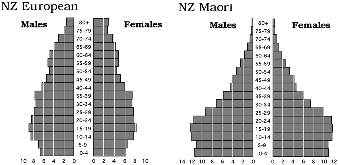
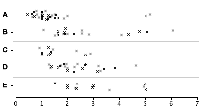
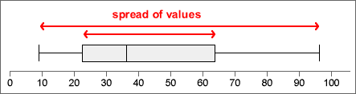

If you don't want to print now,
Information from the variation in data
Variation in data is not simply an annoyance — the variation itself can hold important information.
Simply sorting a data set into order can highlight features that are not obvious in the raw data, such as the lack of values between 3.4 and 4.9 in the data below.
| 6.1 | 5.2 | 7.9 | 2.3 | 3.4 |
| 1.4 | 5.3 | 7.1 | 3.2 | 2.8 |
| 5.1 | 6.9 | 6.1 | 3.4 | 5.2 |
| 5.5 | 2.0 | 1.3 | 4.9 | 6.4 |

Dot plots
Some ranges of values are more common than others — they have higher density.
The simplest graphical display of data that shows where there is high and low density is a dot plot. This shows each value as a cross (or dot) against a numerical axis.
The gap between 3.4 and 4.9 is more obvious on the right than in a textual list of values, whether ordered or not.
Jittering the crosses
In all but the smallest data sets, the crosses on a basic dot plot overlap, making it difficult to identify regions of high density.
Randomly moving crosses away from the axis reduces this problem by separating the crosses:
Note that the vertical jittering is random and therefore tells you nothing about the data.
Stacked dot plots
Stacking the crosses into columns is usually better than jittering them.

Stacking highlights regions of high density well (tall stacks).
Digits instead of crosses
Stem and leaf plots are closely related to stacked dot plots. The crosses are replaced by digits that provide a little more detail about the values that they represent.
Stems and leaves
In a stem and leaf plot, the axis is replaced by a column of 'stems' — the most significant digits of the values in the data. The digits that replace the crosses are called 'leaves' and give a further significant digit of each value on a stem.

A final refinement is to sort the leaves into increasing order on each stem.
Smoothness
When drawing a stem and leaf plot, the aim is for a smooth shape to the stem and leaf plot, and this is usually achieved by between 10 and 20 rows of leaves.
Drawing by hand
When data are analysed on a computer, a stacked dot plot usually describes a distribution of values more clearly than a stem and leaf plot.
However stem and leaf plots are easy to draw by hand:
To simplify drawing, values are truncated to give their stems and leaf digits, not rounded. For example, 7.98 and 7.90 would both be displayed as leaf '9' on the stem '7'.
Exercises are only available online.
Exercises are only available online.
Density
In a stacked dot plot (or stem and leaf plot), the highest stacks contain the most values. These stacks have the highest density of values.

Histograms more directly show how density varies along the axis.
Histograms
In a simple histogram, the axis is split into sub-intervals of equal width called classes. A rectangle is drawn above each class with height equal to the number of values in the class — the frequency of the class.

Aim of a 'smooth' histogram
There is considerable freedom in the choice of histogram classes. The exact shape depends on:
We usually choose classes with the aim of smoothness in the outline of the histogram rectangles.

The choice of 'best' classes is subjective, but...
If your conclusions about what a histogram tells you about the data depend on the choice of histogram classes, you are over-interpreting its shape.
Warning for small data sets
For small data sets, changing the class width and the starting position for the first class can give a surprising amount of variability in histogram shape, so be extremely wary of over-interpreting features such as clusters or skewness.
Indeed, it is probably better to avoid using histograms unless there is a reasonable number of values — stacked dot plots are far less likely to mislead you over minor features.
Relative frequencies to compare two groups
Histograms may be superimposed to compare two groups. However if the groups differ in size, it is usually more meaningful to compare relative frequencies (proportions) than the counts in the classes.
Use relative frequency histograms to compare groups.
For example,

Population pyramids
Relative frequency histograms are also used to describe the distribution of ages in populations. Males and females are separately displayed to the left and right of a central axis, and different sub-populations may be shown in separate 'pyramids'.

Frequency polygons
A frequency polygon is closely related to a histogram with equal class widths. It joins the midpoints of the tops of the class rectangles and tends to give a smoother outline than the corresponding histogram.

It is easier to distinguish and compare superimposed frequency polygons for two groups than the corresponding histograms.

Frequency table
A computer is normally used to draw histograms. Hand-drawn histograms are based on a frequency table that lists the histogram classes and their frequencies.
To avoid ambiguity in the histogram, the class boundaries should be chosen to ensure that no data values are on boundaries. For example,

Height of a histogram rectangle
To draw a histogram by hand with equal class widths, each class rectangle can be drawn with height equal to its class frequency. If class widths vary, we need to calculate the density for each class with the formula:

and use this for the rectangle heights.
Exercises are only available online.
Unhelpful detail when comparing groups
Dot plots, stem and leaf plots and histograms contain a lot of detail about the distribution of values in a data set. This level of detail is useful when examining a single data set, but when several groups of values are being compared, the detail distracts from the main differences between the groups.
For example, the jittered dot plots below do not concisely summarise the differences between the five groups.

Five-number summary
Five values are enough to capture a lot of information about the distribution of values in a data set.
These values split the data set into four groups with approximately equal numbers of values.
Box plot
A box plot displays the five-number summary graphically.

Details
The median, m, is the middle value if there is an odd number of values in the data set. If there is an even number of values, the median is the average of the middle two.
Different authors give slightly different definitions for the upper and lower quartiles. One definition of the lower quartile is the median of the lowest half of the data — i.e. of the values lower than m. (The upper quartile would then be defined as the median of the top half of the values.)
Provided you are consistent, different definitions of the quartiles should lead you to the same conclusions.
Box plots and histograms
Since the median and quartiles split the data set into quartiles, they also split a histogram of the data into four approximately equal areas.

What does a box plot tell you about the distribution?



Exercises are only available online.
Exercises are only available online.
The data matrix
Many datasets contain several measurements from each individual (or plant, item or other unit). Each measurement type is called a variable.

A data set with more than one variable is called multivariate. One with two variables is called bivariate.
Scatterplots
A scatterplot shows each individual as a single cross against a vertical axis (for the variable, Y) and a horizontal axis (for the other variable, X).

By convention, the variable on the vertical axis is called Y and the variable on the horizontal axis is called X.
Scatterplots are needed to display relationships
The relationship between two variables cannot be determined from examination of the two variables in isolation. The two datasets shown in the scatterplots below have the same marginal distributions for X and Y, but the variables are related in very different ways.

Marginal distributions
Although they do not contain information about the relationship between the variables, a display of the marginal distributions can be usefully added to a scatterplot to enhance it, perhaps highlighting skewness in X and Y.

Time-ordering of univariate data
Some data sets are apparently univariate, but the measurements are made sequentially in time. A data set of this form is called a time series.
The time at which each measurement was made may be treated as an additional numerical variable, and the measurement can then be plotted against time. This type of scatterplot is often called a time series plot.

Exercises are only available online.